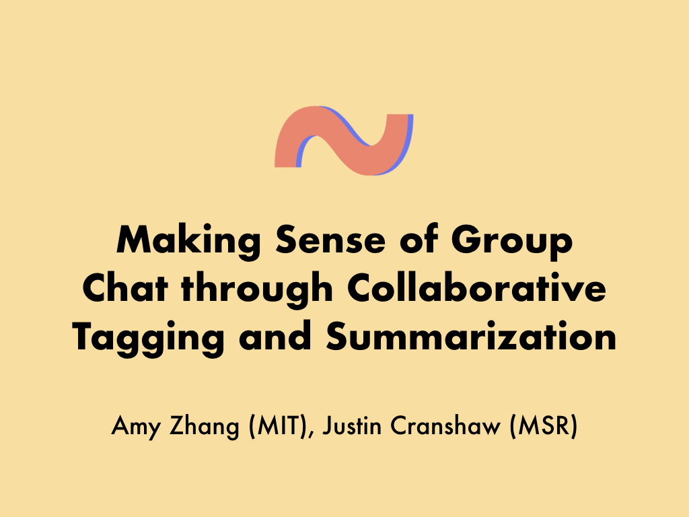
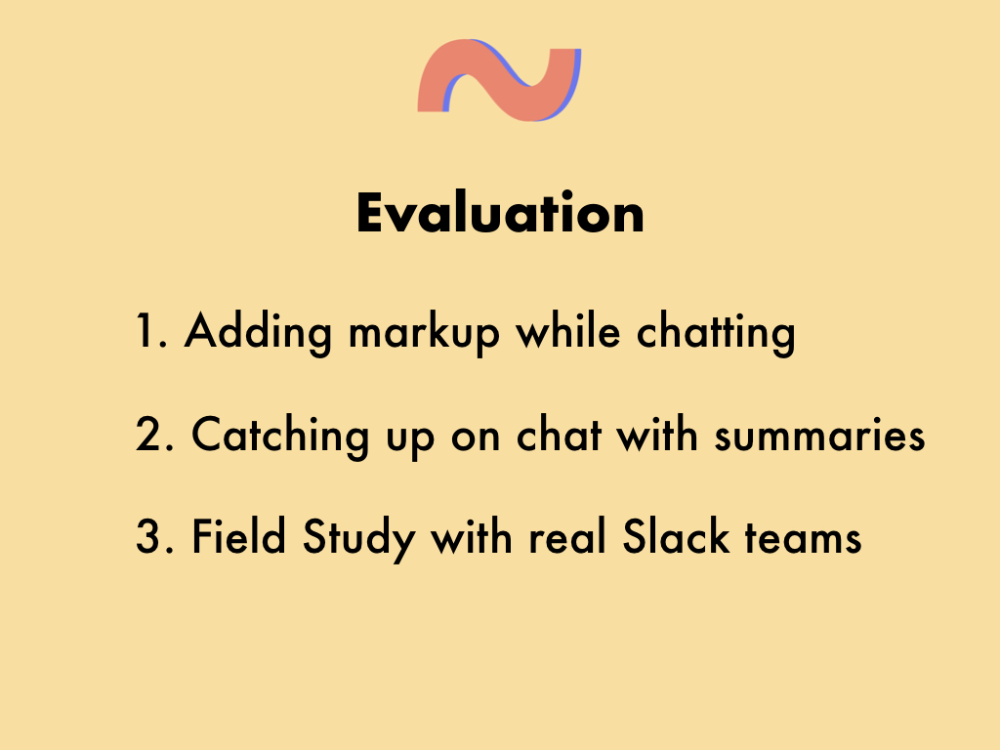

Making Sense of Group Chat through Collaborative Tagging and Summarization
Authors
Amy X. Zhang, MIT CSAILJustin Cranshaw, Microsoft Research
Abstract
While group chat is becoming increasingly popular for team collaboration, these systems generate long streams of unstructured back-and-forth discussion that are difficult to comprehend. In this work, we investigate ways to enrich the representation of chat conversations, using techniques such as tagging and summarization, to enable users to better make sense of chat. Through needfinding interviews with 15 active group chat users, who were shown mock-up alternative chat designs, we found the importance of structured representations, including signals such as discourse acts. We then developed Tilda, a prototype system that enables people to collaboratively enrich their chat conversation while conversing. From lab evaluations, we examined the ease of marking up chat using Tilda as well as the effectiveness of Tilda-enabled summaries for getting an overview. From a field deployment, we found that teams actively engaged with Tilda both for marking up their chat as well as catching up on chat.
Presentation
This talk was given by me at CSCW 2018 in NYC.

Today, many workplaces use group chat systems like Slack, or Microsoft Teams, or Hipchat or IRC for work-related discussion.
Pros: it's fast, casual and fun.
But there are problems.
Chat often has a lot of chatter. so there's lots of little short messages and you can't tell the important from unimportant ones.
As a result, it's really hard to go away and come back and catch up on missed conversations.
This difficulty of catching up helps to encourage an "always on" mentality leading to problems like distraction from work.
(In fact a study found that Slack users have Slack open 10 hours per day on avg)
To confirm and contextual this, we interviewed 15 daily group chat users about the problems they have with catching up, mostly people using chat for work on places like Slack.
We found that almost everyone said they kept their chat open all day. They also checked it at home and on vacation.
It turns out that despite being always on, everyone still fell behind anyway.
One person said this.
We also asked people how they caught up. For the most part people either scrolled up in the chat window until they got tired, or they just ignored messages, thinking that important things will get to them eventually, which oftentimes didn't happen.
So what's the solution?
Well in in-person meetings, the solution is usually to have some sort of note-taker.
But this approach has a few problems.
First you need a designated note-taker who usually has a hard time taking part in the conversation.
Also, it's unclear how well that works in chat, which tends to be more spontaneous.
And as it turns out, attempts by our interviewees' groups to synthesize chat into a document didn't really work. Generally, people found it to be a documentation chore, it was far away from the discussion taking place, and eventually it was forgotten.
So given that was the case, we asked the following two questions.
To explore the design space of these questions, we created 4 mockup designs informed by existing solutions out there.
First are abstractive summaries, basically, what a human would write to summarize something. It's a synthesized paragraph or few sentences. And it's considered kind of a gold standard.
The second are Extractive summaries, which instead of synthesis, these summaries just have a few direct excerpts that are lifted from the discussion.
And Slack has a feature called Highlights which does this.
The third design is similar to the second design but it adds these discourse act markers next to the excerpts. So things like Question and Answer or Update. There are some IRC bots that inspired this.
Finally, the fourth design shows high level signals from the chat, like number of messages, main participants, topics. And this presentation is very structured but there's not much information about what actually happened.
From showing these to interviewees in randomized order and having them compare and contrast, we got the following feedback.
First, we found that people didn't like purely extractive summaries because they lacked context about the discussion.
However, people didn't like abstractive summaries because they were completely unstructured so it's hard to skim.
People found the High level signals overall helpful and skim-able.
And people also really enjoyed the discourse acts, which add in some of that context but also had structure.
Finally, some people mentioned the importance of being able to interact with the summary - for instance if it could have a variable length, or allow for hierarchical exploration to let you dive back to the original discussion.
From these insights, we then developed the tool Tilda to help people take notes of and catch up on chat.
The name comes from this well-known phrase too long didn't read which sounds kind of like Tilda. And Tilda sounds kind of like Tilde, hence our logo.
The way Tilda works is that it allows people to mark up their chat in a lightweight way while they're chatting, with things like the start and end of different conversations, or major discourse acts, like where there's a question and then it leads to an answer, or an idea. Tilda takes this markup and then automatically generates a summary from it that lives inside Slack and links back to the original conversation.
So I mentioned lightweight markup. There's basically two ways to add to a Tilda summary, which we take from existing Slack features. One way is to directly add your own note into a Tilda summary using a slash command which you can pull up by typing slash and a tilde to see the different note types, or by adding an inline emoji to your message.
We added some special emojis that correspond to specific discourse acts we developed after the interviews as you can see. Another technique using emojis is to tag a *pre-existing message* in the Slack channel using emoji reactions. The interesting thing about this technique is that anyone can tag anyone's else's message and you can also go back in time to tag any old message.
Once a conversation is over, Tilda takes those notes and generates a summary that looks kind of like this. There's some high level signals about the conversation. And notes grouped by discourse acts. Each note has a link next to it that takes you right back to the original message.
This summary gets posted to Slack according to your settings. So you can subscribe to a particular channel or topic to arrive in your direct message with Tilda. Or set up a team-wide summaries channel that people can follow.

Here's a video demo of the tool in action.

We did three evaluations. First, we wanted to know the ease and utility of adding markup while participating in conversation.
We also wanted to know the usefulness of summaries for catching up on chat.
Finally, we did a field study with real teams.
I don't have time to go over these in detail but you can see the paper for how we did everything.
For the first study, we recruited people to do group tasks in two of these three conditions.
So for instance, one group would take notes in GDocs while chatting about their task, and then use Tilda while chatting about another task.
From each group comparing their two conditions, we found that Tilda does add some cognitive overhead to just Slack, unsurprisingly, but some people found it worth it for organizational benefits. Overall people found Tilda to be better than Google Docs for the task at hand.
In the 2nd study, we took the artifacts from the first study, and recruited more users to look over the artifacts, so the gdoc notes and chat, or tilda and chat, and answer some comprehension questions about what happened.
Overall, we saw a significant difference where Tilda users felt less rushed than Google Doc users. And people who were using links in Tilda to go from summary to the original discussion also had an easier time. Everything else like accuracy on questions and time to completion ended up not being significant.
Finally, we did a week long field study with these 4 teams.
We show activity over the course of the study and a few days of voluntary usage after. And we had really low required usage, just one note a day, which you can see on the left with raw volume, people easily exceeded.
On the right, the volume of markup is normalized by the total number of chat messages sent by the team for each day, since some days people don't use much Slack.
If you look at the average on the dotted line, you can see somewhere around 40% to 20% of chat messages are marked up in Tilda. 40% is actually pretty high if you think about all the backandforth in chat, and we actually heard from one manager who actually told the rest of his team to mark fewer things since the summaries were too long.
We also show usage broken down by type of note. Overall we got feedback that the discourse acts we picked, like action, answer, etc. were appropriate.
On the bottom is the volume broken down by markup type. One interesting thing is that people seemed to use the slash commands a lot more than emoji reactions, which we hypothesize is because of the bias towards technical people in our study, since our lab study participants said they loved the emoji reactions.
Overall people came away pretty positive
Here someone describes how they caught up using Tilda.
Some future directions for this work that I think is really interesting.
One, Tilda was mostly a manual tool, but you can see how we've broken down this summarization process into a set of concrete steps, some of which could be automated. And Tilda is a great way for teams to collect that rich data.
Another thing, which was our most requested feature was to have Tilda integrating with other tools, so you could add Tilda summaries to email or use it to sync with your task manager.
I personally think this would be really cool to consider in the audio, video, or in-person context.
And finally, I think the techniques and code we've released publicly could be used by academics as conversational probes or ways to collect richer annotated chat data.
So we just released Tilda today. Please try it out or take a look at our code!